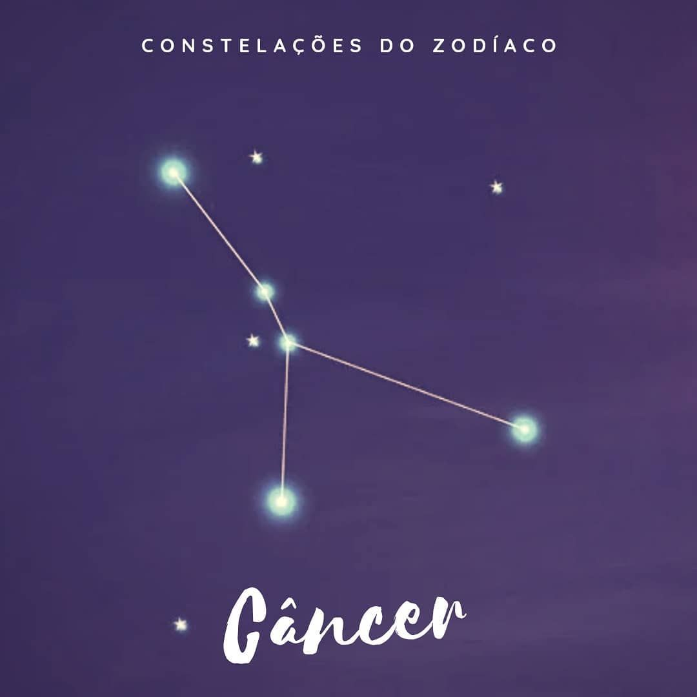

Zona do Zodíaco
Seja bem-vindo ao Zona do Zodíaco! Um site feito de fã para fã.
Navegue e aproveite a imersão nessa verdadeira zona que foi a junção do universo de Cavaleiros do Zodíaco
com todas as informações as quais a obra faz referência como: o cosmos, os astros, o universo e muita história
envolvendo as mais diversas mitologias. Aproveite!
Aries Quem tem sol em Áries costuma viver no agora; além de possuir um grande prazer em
existir, ação e decisão também podem ser algumas de suas marcas. A liderança é uma característica forte no
signo, que pode ser usada para o empreendedorismo.
Características: Tendência pelo imediatismo e pela impulsividade.
Cavaleiro de Aries: Mu é o Cavaleiro de Ouro de Áries do século XX, que protege a Casa
de Áries no Santuário. Hábil na restauração de Armaduras, é ele quem conserta as Armaduras de Bronze do
Seiya e dos outros antes da Batalha das Doze Casas do Zodíaco. Como desde cedo desconfiava do Grande
Mestre, deu as costas ao Santuário. Porém, desejando a purificação do local, manteve suas obrigações
como Cavaleiro, dedicando-se à restauração das Armaduras em Jamiel, porém seu poder não enfraqueceu, o
que pôde ser constatado durante a batalha contra os Espectros.

Touro Quem tem sol em Touro costuma não abrir mão do que traz conforto e bem-estar, mas
pode ter a possessividade em evidência. O signo preza pela beleza física e pela gula. A satisfação de
Touro vem do contato com todos os cinco sentidos.
Características: Apego e dificuldade em lidar com mudanças.

Cavaleiro de Touro: Aldebaran (アルデバラン, Aldebaran) é o Cavaleiro de Ouro da Constelação
de Touro ( 牡牛座 タウラス , Taurus) durante os eventos do Século XX, servindo como o guardião da Casa de Touro
no Santuário. Dotado de uma resistência fora do comum, também tem uma grande força física e uma
agilidade impressionante para alguém de seu porte.

Gêmeos Quem tem sol em Gêmeos costuma apreciar novas ideias, novos lugares e novas
pessoas. Gêmeos tem carisma de sobra e tende a fazer amigos com muita facilidade. A superficialidade e a
inconsequência também podem ser algumas das marcas do signo.
Características: Agilidade mental e efervescência de ideias.

Cavaleiro de Gêmeos: Saga de Gêmeos é um poderoso cavaleiro de ouro, sendo considerado
como o mais poderoso dentre os doze cavaleiros de ouro, ele era um exemplo de conduta e comprometimento
para com sua deusa Athena. O cavaleiro de gêmeos possuía um irmão gêmeo chamado Kanon, que propôs que
eles matassem Athena e comandassem o mundo.

Câncer Quem tem sol em Câncer costuma buscar o que lhe traz segurança. O signo é maternal
e emotivo e tem uma proximidade com o apego ao passado. Câncer costuma ter a intuição acentuada, sentir as
coisas no ar e captar tudo logo no primeiro olhar.
Características: Instinto para agir com as emoções.

Cavaleiro de Cancer: Máscara da Morte de Câncer (蟹座キャンサーのデスマスク Kyansā no Desumasuku?) é
o Cavaleiro de Ouro de Câncer e protetor da quarta Casa do Zodíaco do século XX. Adora lutas, matança e
acredita que, para um objetivo maior, alguns sacrifícios são inevitáveis. As paredes da Casa de Câncer
são enfeitadas com os rostos das pessoas que foram mortas até hoje por Máscara da Morte. Emite uma aura
branca do seu dedo indicador que envia a alma do oponente para a entrada do Mundo dos Mortos – é a Ondas
do Inferno, seu golpe secreto. Ele morre na batalha contra Shiryu, mas retorna do Mundo dos Mortos como
um Espectro. Nessa ocasião, falha na missão de assassinar Atena e acaba novamente no Mundo dos Mortos
pelas mãos de Radamanthys de Wyvern. Apesar disso, participa da derrubada do Muro das Lamentações junto
com os Cavaleiros de Ouro.

Leão Quem tem sol em Leão costuma amar plateias e aplausos. O signo tem a coragem e o
humor como marcas registradas, mas também o orgulho e o autoritarismo. Leão geralmente valoriza as
oportunidades e aproveita cada momento, sabe amar e ter generosidade.
Características: Irradia brilho natural.
Cavaleiro de Leão: Irmão de Aiolos. Apesar de sua personalidade explosiva, tem um
coração puro que distingue rapidamente os justos, por isso foi um dos primeiros Cavaleiros de Ouro a
reconhecer a autoridade de Atena. Como seu irmão Aiolos foi condenado como traidor, ele tenta limpar o
nome da família jurando fidelidade ao Grande Mestre, até participando voluntariamente do extermínio dos
Cavaleiros de Bronze. Durante a batalha contra os Espectros, enfrentou o exército inimigo de frente e
derrubou muitos Espectros, servindo como poder central de ataque no Santuário.

Virgem Quem tem sol em Virgem costuma buscar constantemente a perfeição, tudo sempre
poderia estar um pouco melhor. Signo observador, que costuma identificar o detalhe que ninguém mais
percebe. Virgem tem praticidade e organização, mas também pode ser frio e cético.
Características: Consegue fazer as mudanças necessárias.
Cavaleiro de Virgem: Shaka de Virgem está entre os Cavaleiros de Ouro mais populares de
Os Cavaleiros do Zodíaco. Conhecido como o Homem Mais Próximo de Deus, ele possui o maior cosmo dentre
os 88 Cavaleiros de Atena e se mostrou fundamental para o triunfo dos heróis na Saga de Hades.

Libra Quem tem sol em Libra costuma buscar sempre o
equilíbrio e conviver com a indecisão. Regido por Vênus, o signo tem uma aproximação natural com as artes.
Libra costuma ter ética, mas também pode ter vaidade em excesso e comportamentos considerados de “mau
gosto”.
Características: Forte conexão com a racionalidade.
Cavaleiro de Libra: Dohko de Libra O aparentemente inofensivo Mestre Ancião nada mais é
do que Dohko, o cavaleiro de Libra. Absurdamente poderoso e responsável, o mentor de Shiryu encantou os
fãs tanto na forma como o conhecemos, já velhinho e supostamente frágil, quanto atuando no campo de
batalha durante a saga de Hades.

Escorpião Quem tem sol em Escorpião costuma ter muita perspicácia, não é a toa que são
naturalmente detetives. O sexto sentido do signo alerta para possíveis “perigos” logo de cara. Escorpião
tem uma capacidade de regeneração única, mas também pode ter muitos ciúmes.
Características: Um oceano profundo e inexplorado.
Cavaleiro de Escorpião: Milo de Escorpião (蠍座のミロ Sukōpion no Miro) foi, no século XX, o
Cavaleiro de Ouro de Escorpião que protegia a Casa de Escorpião no Santuário. Era um Cavaleiro fiel ao
Santuário, inicialmente obedecendo as ordens do Grande Mestre, embora houvesse ocasiões em que ele se
negaria a realizar missões específicas por questões de orgulho, sentimento este que determinava o rumo
de suas conversas inicialmente, tendo se tornado consideravelmente mais humilde depois de sua batalha
contra Hyoga de Cisne.

Sagitário Quem tem sol em Sagitário costuma ser viajante, sua casa é o mundo inteiro. O
signo viaja muito também em sua própria mente. Não tente aprisionar Sagitário de nenhuma forma, ele não
aceita limites. Otimista e jovial, pode ter exageros e uma dose de deboche.
Características: Agente da motivação.
Cavaleiro de Sagitario: Aiolos de Sagitário é a encarnação de dois conceitos
fundamentais para a história de Cavaleiros do Zodíaco: lealdade e determinação. Mesmo gravemente ferido,
o Cavaleiro de Sagitário se esforça ao máximo para salvar a bebê Atena do Mestre do Santuário, sendo
atacado por muitos de seus colegas no processo.

Capricórnio Quem tem sol em Capricórnio costuma ter seus propósitos e metas bem
definidos. Signo de praticidade que segue as regras do jogo tem total noção dos seus limites. Capricórnio
é maduro e bem humorado, mas também pode ser frio nas relações e um tanto pessimista.
Características: Foco e paciência em suas metas.
Cavaleiro de Capricórnio: Shura de Capricórnio (山羊座のシュラ Kapurikōn no Shura?) é o
Cavaleiro de Ouro que protege a Casa de Capricórnio. Shura se considera o cavaleiro mais fiel a Atena,
porém sua excessiva lealdade ao Santuário acabou levando-o a cometer uma série de equívocos. Seu golpe
principal é Excalibur, no qual concentra seu cosmo numa rajada cortante de energia, como uma espada.
Este golpe tem uma intensidade concentrada fortíssima, e sai na velocidade da luz.

Aquário Quem tem sol em Aquário costuma ter a amizade como cartão de visita e ter uma
conexão intensa com a liberdade. Signo idealista, tende a dar preferência aos diálogos racionais. Aquário
é solidário e humano, também pode ser radical e bem “do contra”.
Características: O apreço pelo clássico.
Cavaleiro de Aquário: Camus de Aquário ( 水瓶座 アクエリアス のカミュ, Akueriasu no Kamyu?) é o
Cavaleiro de Ouro que protege a Casa de Aquário no Santuário. No mangá, treinou o pequeno Hyoga e Isaak
durante seis anos nas geladas terras do leste da Sibéria. foi obrigado a lutar contra Hyoga no
Santuário.

Peixes Quem tem sol em Peixes costuma entender tudo sem precisar de muitas palavras,
possuem uma sensibilidade superior. Signo compassivo e inspirador, Peixes tende a ter uma forte conexão
com a espiritualidade, mas pode se iludir com certa facilidade.
Características: Um oceano de sentimentos.
Cavaleiro de Peixes: Afrodite de Peixes (魚座ピスケスのアフロディーテ Pisukesu no Afurodite?) é o
Cavaleiro de Ouro de Peixes e protetor da última Casa do Zodíaco do século XX. Usa variações de golpes
com rosas, como o Rosas Diabólicas Reais. Sua ideia é de que só um poder supremo pode manter a paz e
ordem no mundo, mesmo que esse poder provenha do mal. Por isso, mesmo tendo consciência de que o Grande
Mestre servia ao mal, acabou obedecendo suas ordens e matando Daidalos, mestre de Shun. Sua atitude pode
não ser a mais exemplar para um Cavaleiro, mas seu propósito de manter a paz na Terra é igual ao de
qualquer Cavaleiro.
0